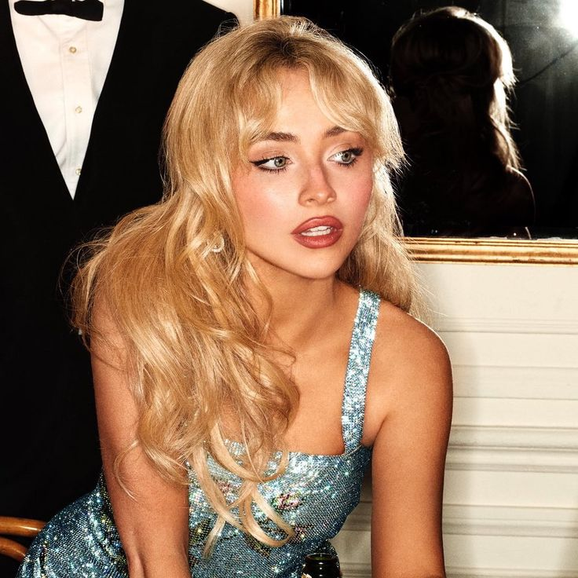

💋Sabrina Carpenter💋

¿Quién es?
Sabrina Carpenter es una cantante, actriz y compositora estadounidense que comenzó su carrera artística en televisión antes de consolidarse como una de las nuevas voces del pop contemporáneo.
Su música mezcla pop moderno, synth-pop y letras confesionales que exploran relaciones, crecimiento personal e identidad. A lo largo de su evolución artística pasó de un sonido juvenil a una estética más madura, irónica y segura.
Hoy es reconocida por su fuerte presencia escénica, su estética cuidada y canciones que conectan especialmente con una generación joven que vive entre la vulnerabilidad emocional y el humor.
Canciones más escuchadas
| Canción | Álbum | Año |
|---|---|---|
| Espresso | Short n´ Sweet | 2024 |
| Feather | Emails I Can´t Send | 2023 |
| Nonsense | Emails I Can´t Send | 2022 |
| Because I Liked a Boy | Emails I Can´t Send | 2022 |
| Please Please Please | Short n´ Sweet | 2024 |
Sneak Peeks (mis favoritas)
Bed Chem
My Man on Willpower
Nobody´s Son